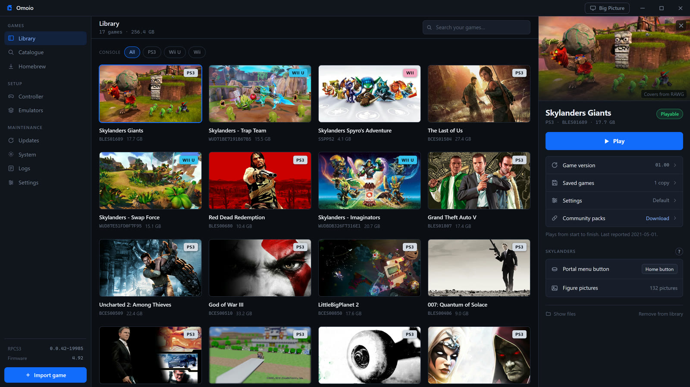
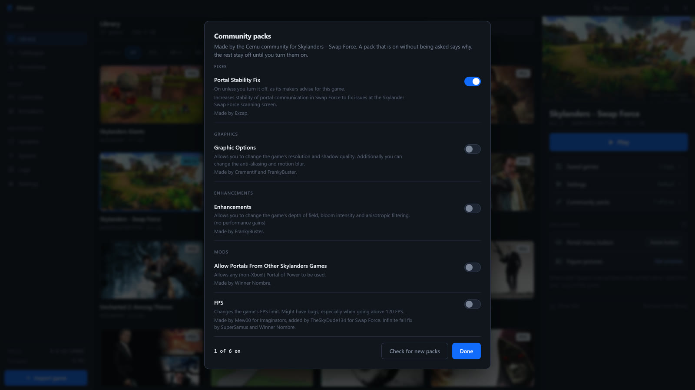
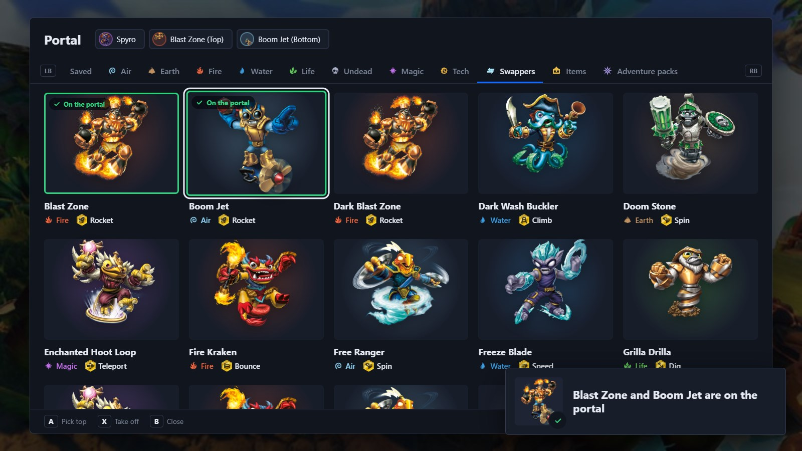
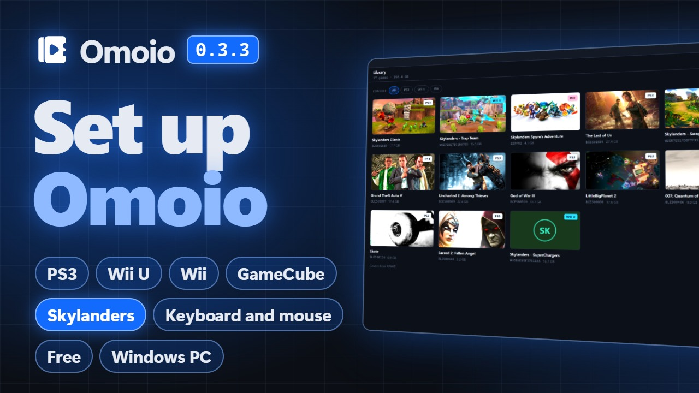
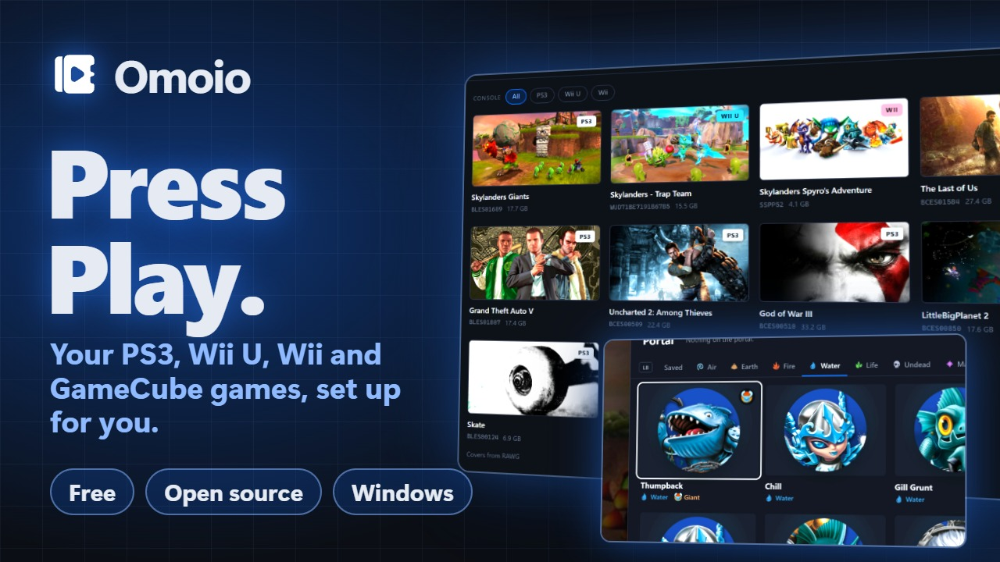

One library for four consoles
Import a folder, a zip or 7z file or a disc image, or scan a whole drive. PS3, Wii U, Wii and GameCube games sit side by side.
Each game starts in its own emulator. Pick it and press Play.

Import the games you own and press Play. Omoio installs RPCS3, Cemu and Dolphin and sets them up for you.
Download for WindowsThe installer isn't signed yet, so Windows may warn you. Click More info, then Run anyway.
Omoio runs on Windows only, so download it on a Windows PC.
Patches and graphic packs from RPCS3's and Cemu's communities download from the same place, and the patches, cheat codes and graphics mods that come with Dolphin are there to switch on.
A fix Omoio turns on by itself says why. Everything else stays off until you turn it on.

Press your controller's home button, or Insert or Tab on the keyboard, and a portal menu opens over the game. Pick any figure, trap, vehicle or crystal and it goes on the portal, in a moment on PS3 and Wii U, where the menu talks to the emulator's own portal server.
It's there in Spyro's Adventure, Giants, SWAP Force and Trap Team on PS3, in SWAP Force, Trap Team, SuperChargers and Imaginators on Wii U, and in Spyro's Adventure on Wii.
Trap Team shows which villains you've caught, SuperChargers keeps a garage of vehicles, and Imaginators keeps your crystals together.
Omoio doesn't come with the figures' pictures. It reads them from your own copy of the game.

The setup guide shows every step on screen, with chapters so you can skip to the one you need.

The guide plays from YouTube when you press it.
A one minute look at the library, the emulators and the Skylanders portal menu, made before Dolphin was added.

The video plays from YouTube when you press it.

Omoio is free, open source and made by one person. It's in early development, and feedback is welcome.
No. Omoio is the library and launcher around the emulators. It installs RPCS3 for PS3 games, Cemu for Wii U games and Dolphin for Wii and GameCube games. It starts them for you, and they do the emulation. RPCS3 and Dolphin are their official builds, and Cemu is Omoio's own build of Cemu 2.6, which only adds a portal server. RPCS3 is kept up to date, and Cemu and Dolphin are updated to the newest version Omoio has tested.
No. Omoio plays dumps of games you own. It doesn't include games, download them or help you find them.
Yes. Omoio is free and open source under the MIT licence, and so are the emulators it installs.
64-bit Windows. PS3 games run through RPCS3, Wii U games through Cemu, and Wii and GameCube games through Dolphin. More systems are planned. How well a game runs depends on the emulator and your PC.
Xbox controllers and other XInput pads work in all three emulators, and so do PS5 and PS4 controllers, without DS4Windows, and the Switch Pro Controller. An 8BitDo pad works in its XInput mode, and in RPCS3 and Cemu in its Switch mode too. Other pads work in RPCS3 through SDL. You set one layout, for up to four players, and in a Wii game your pad is a Wii Remote with a Nunchuk. Any player can play on keyboard and mouse instead, with every key changeable.
Unpacked game folders and .wua files (Cemu's own archive) work as they are. Disc images (.wud and .wux) need your own keys file, added on the Emulators screen. Downloads in NUS form aren't supported.
Dolphin, which Omoio installs. Disc images (.iso, .gcm, .wbfs, .rvz, .wia, .gcz, .ciso and .tgc) play where they are, and so do a disc's files unpacked into a folder. Wii channels (.wad) aren't supported, since a channel is installed into the console rather than played from a disc.
On PS3, Skylanders Spyro's Adventure, Giants, SWAP Force and Trap Team. On Wii U, SWAP Force, Trap Team, SuperChargers and Imaginators. On Wii, Spyro's Adventure. Each one gets a portal menu that puts figures, traps, vehicles and crystals on from your controller, so you don't need a real portal. The figures' pictures come from your own copy of the game. SuperChargers and Imaginators on PS3 and Giants, SWAP Force, Trap Team and SuperChargers on Wii don't have the menu yet, and the other Skylanders games aren't supported.
The installer isn't code signed yet, because a certificate costs money every year. Click More info, then Run anyway. Download it only from this page or from the releases on GitHub.
Open an issue on GitHub, ask on Discord, or email hello@omoio.app, with the game, what happened and your Omoio version. The Logs screen keeps a log of every play session. Look it over for personal details before you share it.